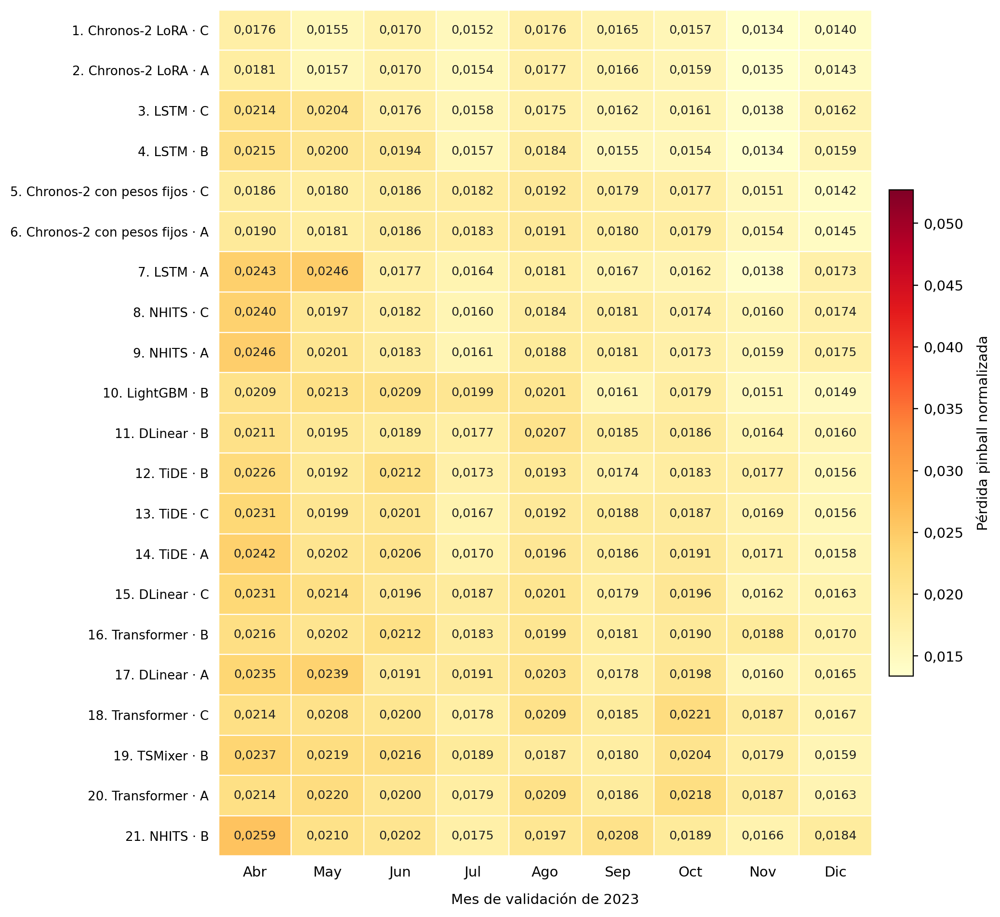
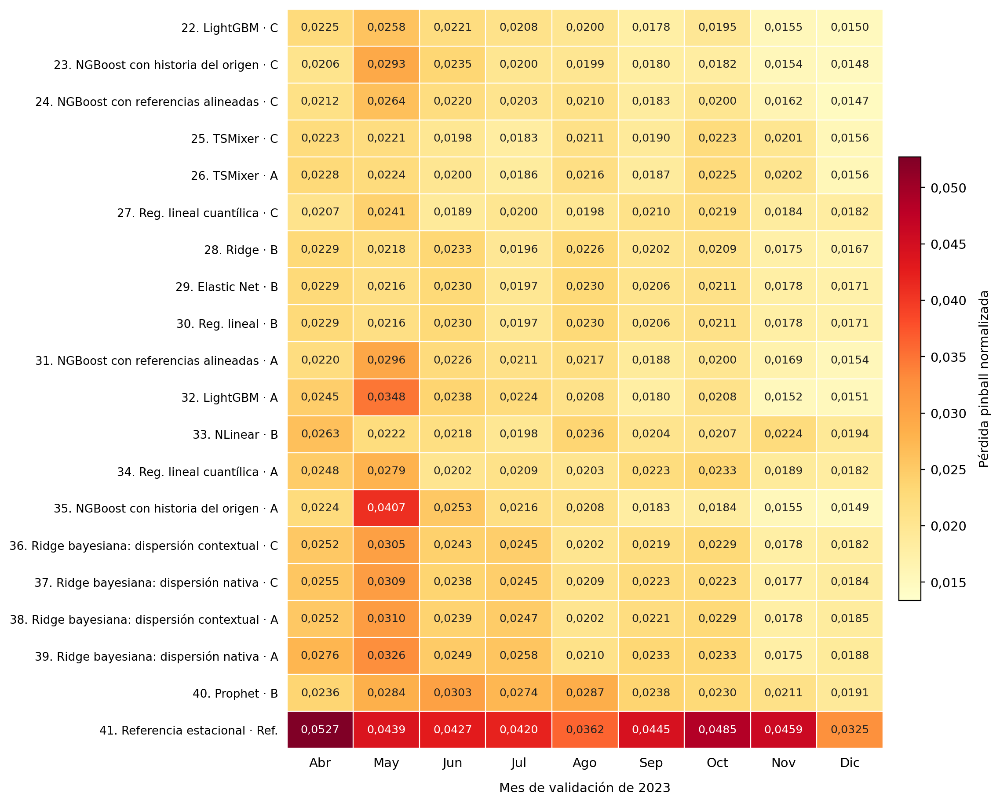
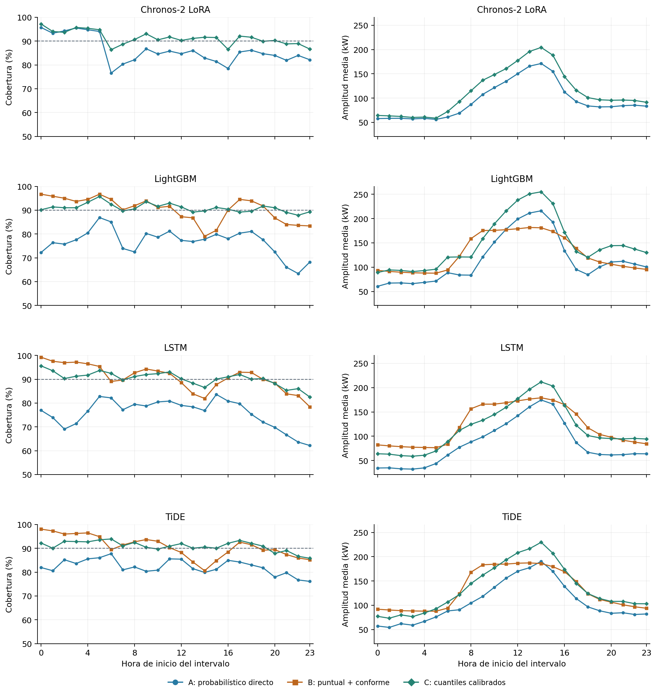
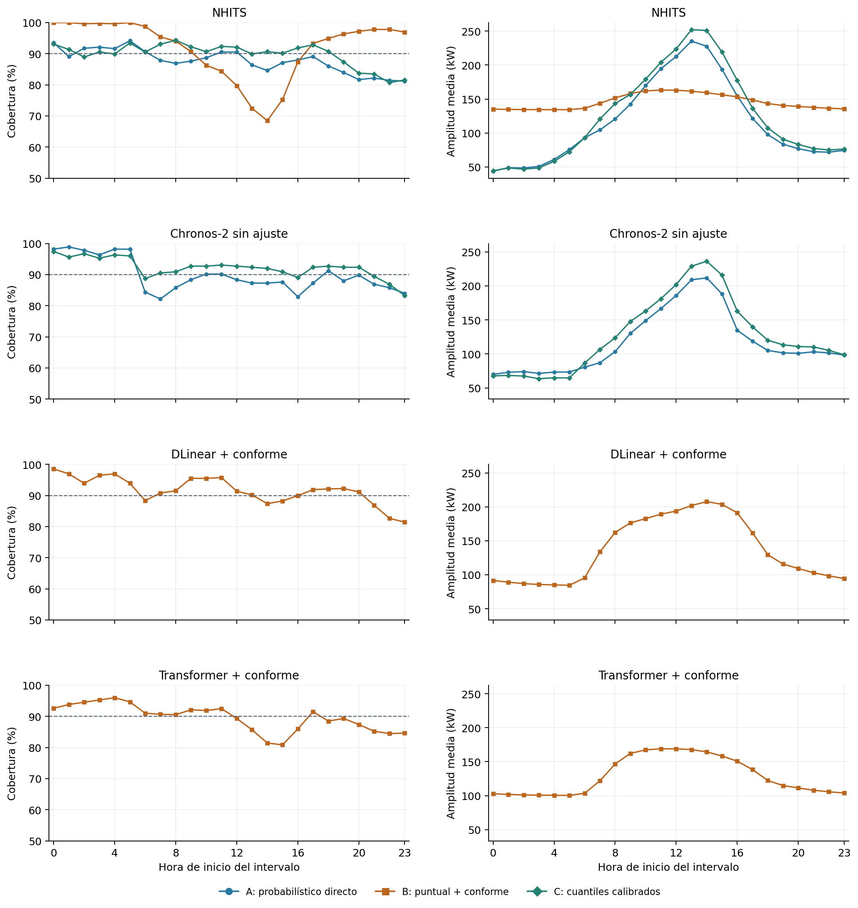
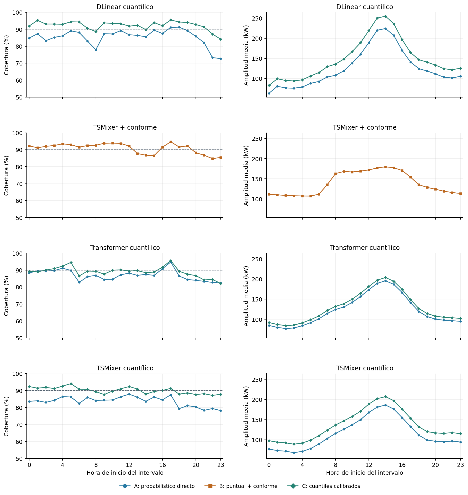
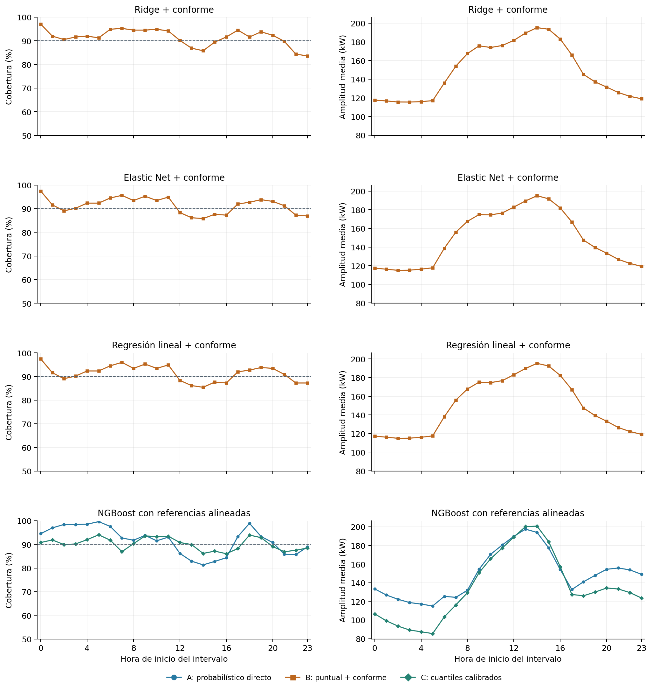
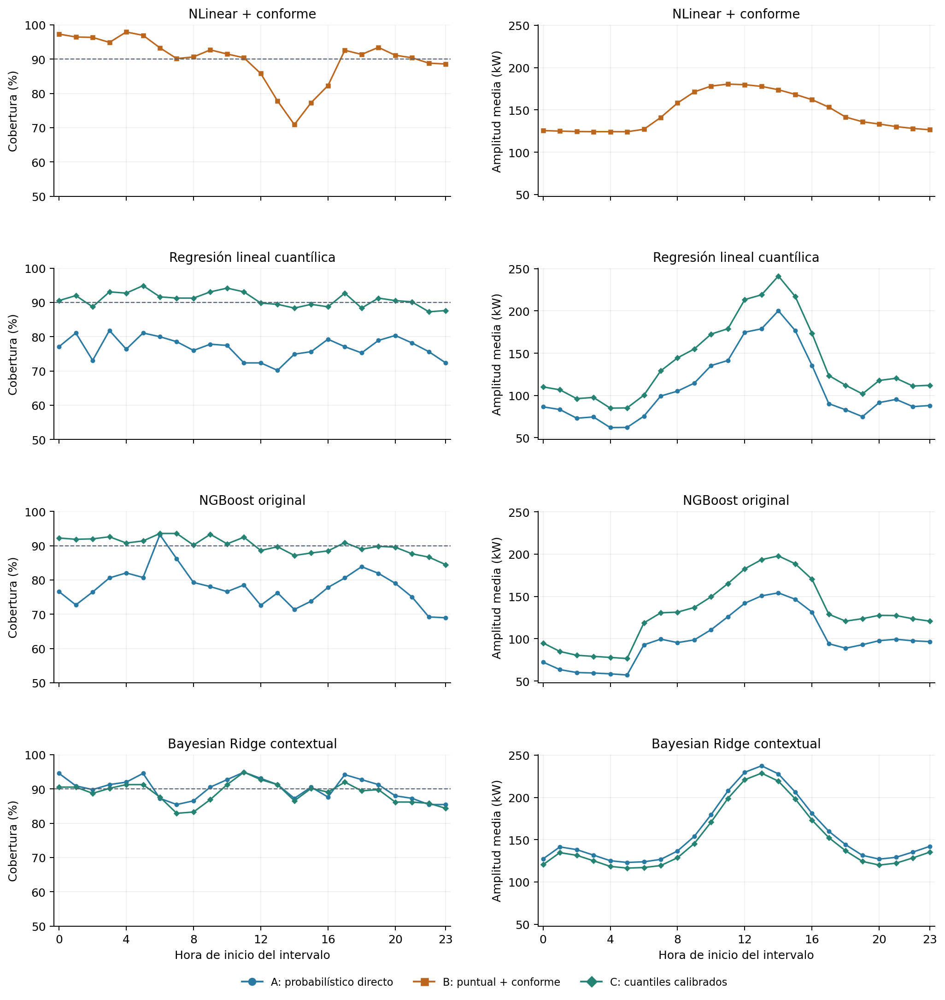
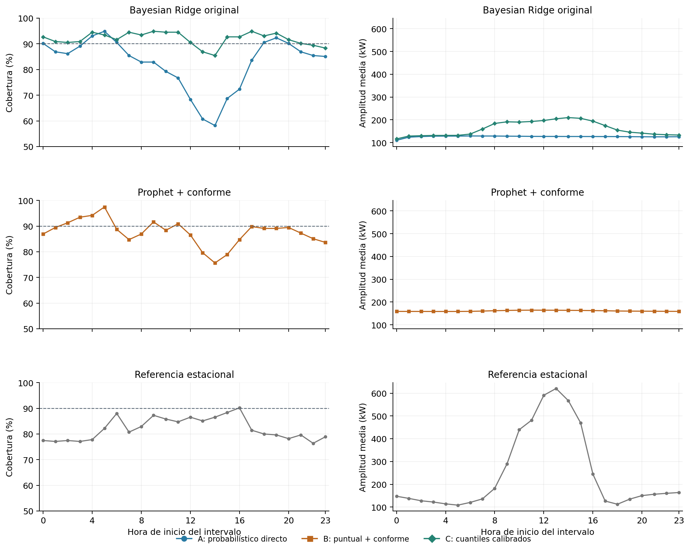

Suplemento S3. Resultados completos de validación
La validación abarca las 6.600 horas de abril–diciembre de 2023. Este suplemento reúne los resultados de los cuarenta y un modelos comparados en el capítulo 5: catorce de aprendizaje probabilístico directo (A), doce puntuales con calibración conforme (B), catorce con calibración de los cuantiles de A (C) y la referencia estacional. Los diagnósticos se calculan sobre las configuraciones seleccionadas; los indicadores y su agregación entre meses se definen en la Sección 4.6.
S3.1 Cruces entre cuantiles pronosticados
El Cuadro S3.1 reúne las veintisiete configuraciones base: catorce modelos de estimación directa de cuantiles o distribuciones (A), doce predictores puntuales con calibración conforme (B) y la referencia estacional. Las catorce versiones C parten de los pronósticos de A después del ordenamiento y aplican la corrección de límites descrita en la Sección 4.8.5.
Para cada ejecución se identifica una hora con cruce cuando P5 > P50 o P50 > P95. Si ambas condiciones se cumplen, la hora se cuenta una sola vez. La frecuencia es el número de horas con cruce dividido por el total de horas evaluadas: 6.600 en validación y 744 en el testeo de enero. En los modelos con tres semillas se promedian las tres frecuencias. El cálculo utiliza las predicciones de las configuraciones seleccionadas, antes del ordenamiento general de los tres valores para calcular las métricas.
Cuadro S3.1. Frecuencia de cruces entre cuantiles en validación y enero de 2024.
| Modelo | Procedimiento | Ejecuciones | Validación abril–diciembre | Testeo enero |
|---|---|---|---|---|
| Regresión lineal cuantílica | A | 1 | 1,97 % | 0,13 % |
| Ridge bayesiana con dispersión nativa | A | 1 | 0,00 % | 0,00 % |
| Ridge bayesiana con dispersión contextual | A | 1 | 0,00 % | 0,00 % |
| DLinear cuantílico | A | 3 | 2,42 % | 2,51 % |
| LightGBM cuantílico | A | 3 | 3,19 % | 1,75 % |
| NGBoost con historia del origen | A | 3 | 0,00 % | 0,00 % |
| NGBoost con referencias alineadas | A | 3 | 0,00 % | 0,00 % |
| LSTM cuantílica | A | 3 | 0,00 % | 0,00 % |
| TiDE cuantílico | A | 3 | 2,47 % | 0,45 % |
| TSMixer cuantílico | A | 3 | 0,00 % | 0,00 % |
| Transformer cuantílico | A | 3 | 0,00 % | 0,00 % |
| NHITS cuantílico | A | 3 | 0,00 % | 0,00 % |
| Chronos-2 con pesos fijos | A | 1 | 0,00 % | 0,00 % |
| Chronos-2 LoRA | A | 3 | 0,00 % | 0,00 % |
| Regresión lineal + conforme | B | 1 | 0,00 % | 0,00 % |
| Ridge + conforme | B | 1 | 0,00 % | 0,00 % |
| Elastic Net + conforme | B | 1 | 0,00 % | 0,00 % |
| Prophet + conforme | B | 1 | 0,00 % | 0,00 % |
| LightGBM + conforme | B | 3 | 0,00 % | 0,00 % |
| DLinear + conforme | B | 3 | 0,00 % | 0,00 % |
| NLinear + conforme | B | 3 | 0,00 % | 0,00 % |
| LSTM + conforme | B | 3 | 0,00 % | 0,00 % |
| TiDE + conforme | B | 3 | 0,00 % | 0,00 % |
| TSMixer + conforme | B | 3 | 0,00 % | 0,00 % |
| Transformer + conforme | B | 3 | 0,00 % | 0,00 % |
| NHITS + conforme | B | 3 | 0,00 % | 0,00 % |
| Referencia estacional | Referencia | 1 | 0,00 % | 0,00 % |
Notas. A: estimación directa de cuantiles o distribuciones; B: predictor puntual con calibración conforme. Los porcentajes corresponden a las salidas guardadas en el punto de evaluación descrito, incluidas las transformaciones propias de cada procedimiento. La particularidad de la LSTM cuantílica se detalla a continuación.
Fuente: elaboración propia a partir de las predicciones guardadas de validación y del testeo de enero.
S3.2 Alcance del registro de la LSTM
La LSTM cuantílica aprende P5, P50 y P95 del paso siguiente. Durante la generación recursiva de las 1.000 trayectorias, esos tres valores se ordenan en cada paso antes de interpolar y extraer el valor simulado. Los cuantiles finales de cada hora del horizonte se obtienen de los valores de las trayectorias en esa hora y, por construcción, conservan el orden.
Por ello, el 0 % de la LSTM corresponde a sus cuantiles finales. El registro utilizado en el cuadro no cuantifica los posibles cruces de las salidas internas de la red antes de simular. El ordenamiento se aplica durante la generación del pronóstico; la función de pérdida empleada para entrenar la red permanece sin cambios. Esta distinción permite interpretar el diagnóstico junto con la construcción del pronóstico descrita en la Sección 4.5.3.
En NGBoost, los tres cuantiles proceden de una misma distribución predictiva y su orden también está garantizado por construcción. En los modelos que pueden generar cuantiles desordenados, el posprocesamiento restablece P5 ≤ P50 ≤ P95 utilizando únicamente los valores pronosticados. Las métricas del capítulo 5 se calculan sobre los pronósticos resultantes.
S3.3 Organización de los resultados de validación
Las tablas siguientes desagregan el desempeño de las configuraciones seleccionadas por cuantil, semilla, mes y contexto. Todas utilizan las mismas horas de validación de abril–diciembre de 2023 y las definiciones de la Sección 4.6.
S3.4 Frecuencias de los cuantiles y puntuación de intervalo
El Cuadro S3.2 distingue la proporción de observaciones inferiores a P5, inferiores o iguales a P50 y superiores a P95. Sus niveles de referencia son 5 %, 50 % y 5 %, respectivamente. Las frecuencias reúnen las 6.600 horas de cada ejecución y se promedian cuando hay tres semillas. El nMAE evalúa el error de la mediana; la puntuación de intervalo de Winkler combina amplitud y penalización por observaciones externas, según S6.4. Ambos se normalizan por la media mensual del valor absoluto de la demanda y se promedian con igual peso mensual.
Cuadro S3.2. Frecuencias cuantílicas, nMAE y puntuación de intervalo en validación.
| Modelo | Vía | Bajo P5 | Hasta P50 | Sobre P95 | nMAE P50 | Winkler normalizado |
|---|---|---|---|---|---|---|
| Chronos-2 LoRA + calibración de cuantiles | C | 4,55 % | 50,27 % | 4,13 % | 0,06093 | 0,341 |
| Chronos-2 LoRA | A | 6,34 % | 50,27 % | 7,57 % | 0,06093 | 0,352 |
| LSTM + calibración de cuantiles | C | 4,48 % | 47,75 % | 5,19 % | 0,06652 | 0,367 |
| LSTM + conforme | B | 4,78 % | 48,92 % | 4,51 % | 0,06511 | 0,383 |
| Chronos-2 con pesos fijos + calibración de cuantiles | C | 4,36 % | 51,23 % | 3,44 % | 0,06772 | 0,372 |
| Chronos-2 con pesos fijos | A | 5,14 % | 51,23 % | 5,06 % | 0,06772 | 0,383 |
| LSTM cuantílica | A | 10,27 % | 47,75 % | 13,98 % | 0,06652 | 0,436 |
| NHITS + calibración de cuantiles | C | 4,48 % | 52,57 % | 5,69 % | 0,07175 | 0,384 |
| NHITS | A | 6,38 % | 52,57 % | 5,82 % | 0,07175 | 0,394 |
| LightGBM + conforme | B | 4,53 % | 48,98 % | 5,11 % | 0,06972 | 0,417 |
| DLinear + conforme | B | 4,24 % | 49,53 % | 4,10 % | 0,07062 | 0,410 |
| TiDE + conforme | B | 4,61 % | 50,42 % | 4,67 % | 0,07093 | 0,415 |
| TiDE + calibración de cuantiles | C | 4,43 % | 50,38 % | 4,59 % | 0,07116 | 0,414 |
| TiDE cuantílico | A | 9,41 % | 50,38 % | 8,36 % | 0,07116 | 0,436 |
| DLinear + calibración de cuantiles | C | 3,93 % | 48,91 % | 3,79 % | 0,07198 | 0,433 |
| Transformer + conforme | B | 5,44 % | 48,28 % | 4,98 % | 0,07433 | 0,417 |
| DLinear cuantílico | A | 6,04 % | 48,91 % | 8,53 % | 0,07198 | 0,452 |
| Transformer + calibración de cuantiles | C | 5,58 % | 51,62 % | 5,35 % | 0,07521 | 0,427 |
| TSMixer + conforme | B | 4,73 % | 51,66 % | 4,40 % | 0,07571 | 0,422 |
| Transformer cuantílico | A | 7,86 % | 51,62 % | 5,09 % | 0,07521 | 0,431 |
| NHITS puntual + conforme | B | 3,85 % | 49,93 % | 4,22 % | 0,07193 | 0,474 |
| LightGBM + calibración de cuantiles | C | 4,48 % | 44,24 % | 4,55 % | 0,07565 | 0,437 |
| NGBoost con historia del origen + calibración de cuantiles | C | 4,43 % | 41,88 % | 5,38 % | 0,08011 | 0,397 |
| NGBoost con referencias alineadas + calibración de cuantiles | C | 4,59 % | 42,40 % | 5,19 % | 0,07891 | 0,412 |
| TSMixer + calibración de cuantiles | C | 5,21 % | 46,66 % | 4,72 % | 0,07633 | 0,441 |
| TSMixer cuantílico | A | 8,15 % | 46,66 % | 8,20 % | 0,07633 | 0,452 |
| Regresión lineal cuantílica + calibración de cuantiles | C | 4,47 % | 47,08 % | 4,68 % | 0,07955 | 0,425 |
| Ridge + conforme | B | 4,41 % | 52,26 % | 4,05 % | 0,07926 | 0,445 |
| Elastic Net + conforme | B | 4,41 % | 51,91 % | 4,23 % | 0,07999 | 0,445 |
| Regresión lineal + conforme | B | 4,38 % | 51,77 % | 4,24 % | 0,08000 | 0,445 |
| NGBoost con referencias alineadas | A | 1,76 % | 42,40 % | 6,52 % | 0,07891 | 0,466 |
| LightGBM cuantílico | A | 7,27 % | 44,24 % | 16,06 % | 0,07565 | 0,546 |
| NLinear + conforme | B | 4,62 % | 47,90 % | 5,40 % | 0,08330 | 0,477 |
| Regresión lineal cuantílica | A | 9,44 % | 47,08 % | 13,77 % | 0,07955 | 0,516 |
| NGBoost con historia del origen | A | 5,84 % | 41,88 % | 16,18 % | 0,08011 | 0,518 |
| Ridge bayesiana con dispersión contextual + calibración de cuantiles | C | 5,41 % | 46,55 % | 5,71 % | 0,08927 | 0,478 |
| Ridge bayesiana con dispersión nativa + calibración de cuantiles | C | 3,97 % | 46,56 % | 4,08 % | 0,08927 | 0,483 |
| Ridge bayesiana con dispersión contextual | A | 4,00 % | 46,55 % | 5,80 % | 0,08927 | 0,483 |
| Ridge bayesiana con dispersión nativa | A | 7,61 % | 46,56 % | 9,86 % | 0,08927 | 0,539 |
| Prophet + conforme | B | 6,26 % | 50,08 % | 6,12 % | 0,09706 | 0,532 |
| Referencia estacional | Referencia | 9,64 % | 47,86 % | 8,30 % | 0,16310 | 0,962 |
Fuente: elaboración propia a partir de predicciones guardadas.
S3.5 Pérdida por semilla
El Cuadro S3.3 presenta la pérdida pinball normalizada de las tres ejecuciones de cada configuración estocástica. Cada valor promedia los nueve meses de validación con igual peso mensual. La desviación estándar muestral utiliza divisor dos, correspondiente a tres ejecuciones menos una, y describe su variación sobre las mismas fechas. Los modelos con una única ejecución se incluyen en los cuadros globales.
Cuadro S3.3. Pérdida pinball normalizada por semilla en validación.
| Modelo | Vía | Semilla 42 | Semilla 1 | Semilla 2 | Desviación estándar |
|---|---|---|---|---|---|
| Chronos-2 LoRA + calibración de cuantiles | C | 0,015757 | 0,015950 | 0,015801 | 0,000101 |
| Chronos-2 LoRA | A | 0,015930 | 0,016131 | 0,015994 | 0,000103 |
| LSTM + calibración de cuantiles | C | 0,017208 | 0,017327 | 0,017090 | 0,000119 |
| LSTM + conforme | B | 0,017382 | 0,017156 | 0,017158 | 0,000130 |
| LSTM cuantílica | A | 0,018370 | 0,018586 | 0,018100 | 0,000244 |
| NHITS + calibración de cuantiles | C | 0,018234 | 0,018474 | 0,018363 | 0,000120 |
| NHITS | A | 0,018384 | 0,018622 | 0,018576 | 0,000126 |
| LightGBM + conforme | B | 0,018489 | 0,018563 | 0,018637 | 0,000074 |
| DLinear + conforme | B | 0,018408 | 0,018764 | 0,018623 | 0,000179 |
| TiDE + conforme | B | 0,018395 | 0,018858 | 0,018952 | 0,000298 |
| TiDE + calibración de cuantiles | C | 0,018870 | 0,018687 | 0,018736 | 0,000095 |
| TiDE cuantílico | A | 0,019212 | 0,019095 | 0,019085 | 0,000070 |
| DLinear + calibración de cuantiles | C | 0,019246 | 0,019059 | 0,019356 | 0,000150 |
| Transformer + conforme | B | 0,018764 | 0,019680 | 0,019586 | 0,000504 |
| DLinear cuantílico | A | 0,019591 | 0,019349 | 0,019663 | 0,000164 |
| Transformer + calibración de cuantiles | C | 0,019522 | 0,019432 | 0,019987 | 0,000298 |
| TSMixer + conforme | B | 0,019760 | 0,019364 | 0,019825 | 0,000250 |
| Transformer cuantílico | A | 0,019654 | 0,019543 | 0,019974 | 0,000224 |
| NHITS puntual + conforme | B | 0,019925 | 0,019785 | 0,019962 | 0,000094 |
| LightGBM + calibración de cuantiles | C | 0,019896 | 0,019845 | 0,019950 | 0,000052 |
| NGBoost con historia del origen + calibración de cuantiles | C | 0,020004 | 0,019909 | 0,019997 | 0,000053 |
| NGBoost con referencias alineadas + calibración de cuantiles | C | 0,020096 | 0,019970 | 0,019996 | 0,000067 |
| TSMixer + calibración de cuantiles | C | 0,019680 | 0,020200 | 0,020313 | 0,000338 |
| TSMixer cuantílico | A | 0,019797 | 0,020457 | 0,020494 | 0,000392 |
| NGBoost con referencias alineadas | A | 0,021030 | 0,020826 | 0,020886 | 0,000105 |
| LightGBM cuantílico | A | 0,021690 | 0,021674 | 0,021771 | 0,000052 |
| NLinear + conforme | B | 0,021232 | 0,022116 | 0,022136 | 0,000516 |
| NGBoost con historia del origen | A | 0,022036 | 0,021853 | 0,022069 | 0,000116 |
Fuente: elaboración propia a partir de los resultados y registros del experimento.
S3.6 Pérdida mensual de todos los modelos
Las Figuras S3.1 y S3.2 muestran la pérdida pinball normalizada de los cuarenta y un modelos en los nueve meses de validación. Las filas siguen el orden del Cuadro 5.2, determinado por el promedio con igual peso mensual. Cada valor se promedia entre ejecuciones cuando el modelo se evaluó con tres semillas.
Figura S3.1. Pérdida pinball normalizada mensual: posiciones 1 a 21.

Nota. La escala de color es común a las Figuras S3.1 y S3.2 y abarca todos los modelos. A: aprendizaje probabilístico directo; B: puntual + conforme; C: calibración de los cuantiles de A.
Fuente: elaboración propia a partir de las predicciones de validación.
Figura S3.2. Pérdida pinball normalizada mensual: posiciones 22 a 41.

Nota. Se conserva la escala y la definición de la Figura S3.1. La referencia estacional ocupa la última fila.
Fuente: elaboración propia a partir de las predicciones de validación.
S3.7 Cobertura por contexto
Los Cuadros S3.4 y S3.5 agrupan las mismas 6.600 observaciones por condición solar y, por separado, por tipo de día. La clasificación solar distingue irradiancia potencial baja —GHI de cielo despejado inferior a 20 W/m²— y, entre las restantes horas, mayor o menor atenuación relativa de GHI. Estas últimas se separan por la mediana del cociente GHI/GHI de cielo despejado de validación, aproximadamente 0,858. Un cociente menor indica mayor atenuación. El corte se obtiene de las covariables, independientemente de los errores, según la Sección 5.5.4. Cada cobertura se calcula por ejecución y se promedia cuando hay tres semillas.
Condiciones solares en validación
Cuadro S3.4. Cobertura por condición solar en validación.
| Modelo | Vía | Recurso potencial bajo (3.376 h) | Índice ≤ 0,858 (1.612 h) | Índice > 0,858 (1.612 h) |
|---|---|---|---|---|
| Chronos-2 LoRA + calibración de cuantiles | C | 92,04 % | 87,34 % | 93,80 % |
| Chronos-2 LoRA | A | 88,99 % | 79,47 % | 86,66 % |
| LSTM + calibración de cuantiles | C | 89,76 % | 89,60 % | 92,22 % |
| LSTM + conforme | B | 91,42 % | 86,87 % | 93,05 % |
| Chronos-2 con pesos fijos + calibración de cuantiles | C | 92,59 % | 89,83 % | 93,73 % |
| Chronos-2 con pesos fijos | A | 92,59 % | 84,86 % | 88,90 % |
| LSTM cuantílica | A | 71,78 % | 78,45 % | 81,35 % |
| NHITS + calibración de cuantiles | C | 88,01 % | 90,49 % | 92,99 % |
| NHITS | A | 87,50 % | 86,02 % | 90,20 % |
| LightGBM + conforme | B | 91,28 % | 85,71 % | 93,09 % |
| DLinear + conforme | B | 91,86 % | 88,15 % | 94,75 % |
| TiDE + conforme | B | 92,20 % | 85,11 % | 93,24 % |
| TiDE + calibración de cuantiles | C | 90,62 % | 90,22 % | 92,49 % |
| TiDE cuantílico | A | 81,62 % | 81,78 % | 83,93 % |
| DLinear + calibración de cuantiles | C | 92,17 % | 90,86 % | 93,92 % |
| Transformer + conforme | B | 90,64 % | 84,55 % | 92,39 % |
| DLinear cuantílico | A | 84,53 % | 85,03 % | 87,74 % |
| Transformer + calibración de cuantiles | C | 88,27 % | 87,97 % | 91,85 % |
| TSMixer + conforme | B | 90,26 % | 88,23 % | 94,77 % |
| Transformer cuantílico | A | 87,05 % | 85,22 % | 88,88 % |
| NHITS puntual + conforme | B | 98,21 % | 79,71 % | 91,00 % |
| LightGBM + calibración de cuantiles | C | 90,95 % | 90,01 % | 92,00 % |
| NGBoost con historia del origen + calibración de cuantiles | C | 89,83 % | 88,15 % | 92,97 % |
| NGBoost con referencias alineadas + calibración de cuantiles | C | 90,49 % | 86,27 % | 93,61 % |
| TSMixer + calibración de cuantiles | C | 90,20 % | 88,21 % | 91,67 % |
| TSMixer cuantílico | A | 82,29 % | 82,84 % | 87,30 % |
| Regresión lineal cuantílica + calibración de cuantiles | C | 90,67 % | 89,21 % | 92,87 % |
| Ridge + conforme | B | 91,02 % | 88,40 % | 95,78 % |
| Elastic Net + conforme | B | 91,56 % | 87,10 % | 95,22 % |
| Regresión lineal + conforme | B | 91,59 % | 87,03 % | 95,29 % |
| NGBoost con referencias alineadas | A | 94,20 % | 84,22 % | 94,04 % |
| LightGBM cuantílico | A | 74,91 % | 77,44 % | 79,59 % |
| NLinear + conforme | B | 93,65 % | 80,85 % | 91,42 % |
| Regresión lineal cuantílica | A | 78,11 % | 73,88 % | 76,92 % |
| NGBoost con historia del origen | A | 77,44 % | 75,66 % | 81,45 % |
| Ridge bayesiana con dispersión contextual + calibración de cuantiles | C | 88,48 % | 88,03 % | 90,57 % |
| Ridge bayesiana con dispersión nativa + calibración de cuantiles | C | 91,59 % | 89,21 % | 95,47 % |
| Ridge bayesiana con dispersión contextual | A | 90,14 % | 88,40 % | 92,12 % |
| Ridge bayesiana con dispersión nativa | A | 89,34 % | 67,80 % | 83,00 % |
| Prophet + conforme | B | 89,84 % | 78,47 % | 92,12 % |
| Referencia estacional | Referencia | 78,91 % | 83,31 % | 87,41 % |
Fuente: elaboración propia a partir de las predicciones y covariables de validación.
Día de la semana en validación
Cuadro S3.5. Cobertura por tipo de día en validación.
| Modelo | Vía | Lunes a viernes (4.680 h) | Sábados (960 h) | Domingos (960 h) |
|---|---|---|---|---|
| Chronos-2 LoRA + calibración de cuantiles | C | 91,42 % | 91,81 % | 90,35 % |
| Chronos-2 LoRA | A | 86,40 % | 86,39 % | 84,34 % |
| LSTM + calibración de cuantiles | C | 90,81 % | 90,03 % | 88,23 % |
| LSTM + conforme | B | 90,78 % | 90,83 % | 90,21 % |
| Chronos-2 con pesos fijos + calibración de cuantiles | C | 92,14 % | 91,15 % | 93,54 % |
| Chronos-2 con pesos fijos | A | 90,58 % | 86,56 % | 89,27 % |
| LSTM cuantílica | A | 76,78 % | 75,90 % | 70,56 % |
| NHITS + calibración de cuantiles | C | 89,78 % | 90,24 % | 89,69 % |
| NHITS | A | 88,07 % | 87,15 % | 87,12 % |
| LightGBM + conforme | B | 90,66 % | 89,24 % | 90,03 % |
| DLinear + conforme | B | 91,20 % | 93,61 % | 91,98 % |
| TiDE + conforme | B | 90,98 % | 89,24 % | 90,94 % |
| TiDE + calibración de cuantiles | C | 91,13 % | 89,48 % | 91,77 % |
| TiDE cuantílico | A | 82,34 % | 80,31 % | 83,58 % |
| DLinear + calibración de cuantiles | C | 91,79 % | 93,40 % | 93,54 % |
| Transformer + conforme | B | 90,11 % | 88,96 % | 87,60 % |
| DLinear cuantílico | A | 84,96 % | 87,40 % | 85,76 % |
| Transformer + calibración de cuantiles | C | 89,08 % | 89,65 % | 88,44 % |
| TSMixer + conforme | B | 90,92 % | 90,52 % | 90,97 % |
| Transformer cuantílico | A | 87,28 % | 87,60 % | 85,35 % |
| NHITS puntual + conforme | B | 92,48 % | 91,39 % | 89,83 % |
| LightGBM + calibración de cuantiles | C | 90,88 % | 90,69 % | 91,70 % |
| NGBoost con historia del origen + calibración de cuantiles | C | 90,04 % | 92,43 % | 88,68 % |
| NGBoost con referencias alineadas + calibración de cuantiles | C | 90,75 % | 89,72 % | 88,13 % |
| TSMixer + calibración de cuantiles | C | 90,06 % | 89,20 % | 90,97 % |
| TSMixer cuantílico | A | 83,41 % | 84,17 % | 84,27 % |
| Regresión lineal cuantílica + calibración de cuantiles | C | 90,53 % | 91,35 % | 91,88 % |
| Ridge + conforme | B | 91,77 % | 90,21 % | 91,77 % |
| Elastic Net + conforme | B | 91,54 % | 90,52 % | 91,35 % |
| Regresión lineal + conforme | B | 91,60 % | 90,52 % | 91,15 % |
| NGBoost con referencias alineadas | A | 92,38 % | 92,95 % | 87,33 % |
| LightGBM cuantílico | A | 76,73 % | 78,12 % | 74,93 % |
| NLinear + conforme | B | 90,36 % | 88,75 % | 89,38 % |
| Regresión lineal cuantílica | A | 76,13 % | 80,52 % | 76,25 % |
| NGBoost con historia del origen | A | 78,71 % | 79,69 % | 72,74 % |
| Ridge bayesiana con dispersión contextual + calibración de cuantiles | C | 89,00 % | 88,54 % | 88,65 % |
| Ridge bayesiana con dispersión nativa + calibración de cuantiles | C | 91,62 % | 92,08 % | 93,44 % |
| Ridge bayesiana con dispersión contextual | A | 90,43 % | 89,79 % | 89,48 % |
| Ridge bayesiana con dispersión nativa | A | 82,39 % | 83,44 % | 82,29 % |
| Prophet + conforme | B | 88,29 % | 85,21 % | 86,77 % |
| Referencia estacional | Referencia | 82,95 % | 81,88 % | 77,92 % |
Fuente: elaboración propia a partir de las predicciones y el calendario de validación.
S3.8 Diagnósticos horarios completos de validación
Cada punto reúne el mismo intervalo horario en los 275 días de validación. Las coberturas y amplitudes se calculan por ejecución y se promedian entre semillas cuando corresponde. La amplitud se expresa en kW. Se agrupan las vías disponibles de cada modelo para facilitar su comparación. La línea discontinua indica el 90 % nominal.
Figura S3.3. Cobertura y amplitud por hora: Chronos-2 LoRA, LightGBM, LSTM, TiDE.

Fuente: elaboración propia a partir de las predicciones de validación.
Figura S3.4. Cobertura y amplitud por hora: NHITS, Chronos-2 con pesos fijos, DLinear + conforme, Transformer + conforme.

Fuente: elaboración propia a partir de las predicciones de validación.
Figura S3.5. Cobertura y amplitud por hora: DLinear cuantílico, TSMixer + conforme, Transformer cuantílico, TSMixer cuantílico.

Fuente: elaboración propia a partir de las predicciones de validación.
Figura S3.6. Cobertura y amplitud por hora: Ridge + conforme, Elastic Net + conforme, Regresión lineal + conforme, NGBoost con referencias alineadas.

Fuente: elaboración propia a partir de las predicciones de validación.
Figura S3.7. Cobertura y amplitud por hora: NLinear + conforme, Regresión lineal cuantílica, NGBoost con historia del origen, Ridge bayesiana con dispersión contextual.

Fuente: elaboración propia a partir de las predicciones de validación.
Figura S3.8. Cobertura y amplitud por hora: Ridge bayesiana con dispersión nativa, Prophet + conforme, Referencia estacional.

Fuente: elaboración propia a partir de las predicciones de validación.
S3.9 Pérdida de las tres construcciones comparables
El Cuadro S3.6 reúne los ocho tipos de modelo con versiones A, B y C. A y B conservan las configuraciones elegidas para cada procedimiento; C utiliza el predictor y la mediana de A y calibra sus cuantiles extremos. Esta organización permite leer conjuntamente la comparación de procedimientos completos y el efecto de calibrar un predictor fijo.
Cuadro S3.6. Pérdida pinball normalizada de las tres construcciones en los modelos con versiones A y B.
| Modelo | A: directo | B: puntual + conforme | C: cuantiles calibrados |
|---|---|---|---|
| Regresión lineal | 0,021852 | 0,020744 | 0,020341 |
| LightGBM cuantílico | 0,021712 | 0,018563 | 0,019897 |
| LSTM cuantílica | 0,018352 | 0,017232 | 0,017208 |
| DLinear cuantílico | 0,019535 | 0,018598 | 0,019221 |
| TiDE cuantílico | 0,019131 | 0,018735 | 0,018764 |
| Transformer cuantílico | 0,019723 | 0,019344 | 0,019647 |
| TSMixer cuantílico | 0,020249 | 0,019650 | 0,020064 |
| NHITS | 0,018527 | 0,019891 | 0,018357 |
Fuente: elaboración propia a partir de las predicciones de validación.
S3.10 Desviación de la cobertura en las veinticuatro horas
El cuadro presenta el indicador definido en la Sección 4.6.2 para cada predictor probabilístico y su versión con calibración de cuantiles. Resume el perfil completo del día mediante el promedio de las diferencias absolutas entre la cobertura de cada hora y el 90 %.
Cuadro S3.7. Desviación absoluta media de la cobertura horaria en validación.
| Predictor probabilístico | Antes de calibrar (A) | Después de calibrar (C) | Reducción |
|---|---|---|---|
| Ridge bayesiana con dispersión nativa | 8,45 | 2,77 | 5,68 |
| DLinear cuantílico | 4,77 | 3,12 | 1,65 |
| LightGBM cuantílico | 13,33 | 1,50 | 11,83 |
| LSTM cuantílica | 14,25 | 2,26 | 11,99 |
| NGBoost con historia del origen | 12,28 | 1,94 | 10,34 |
| TiDE cuantílico | 7,78 | 1,88 | 5,89 |
| Transformer cuantílico | 3,52 | 2,22 | 1,30 |
| TSMixer cuantílico | 6,35 | 1,64 | 4,71 |
| Chronos-2 LoRA | 6,22 | 2,48 | 3,74 |
| Chronos-2 con pesos fijos | 4,30 | 3,24 | 1,06 |
| NHITS | 3,45 | 2,68 | 0,77 |
| Ridge bayesiana con dispersión contextual | 2,68 | 2,47 | 0,21 |
| NGBoost con referencias alineadas | 5,22 | 2,19 | 3,04 |
| Regresión lineal cuantílica | 13,21 | 1,86 | 11,35 |
Nota. Valores en puntos porcentuales. La reducción es la diferencia entre A y C; un valor positivo indica mejora. Las coberturas horarias se promedian entre ejecuciones antes de calcular el indicador. Cada hora reúne 275 observaciones temporales por ejecución. La comparación mantiene el predictor y P50. Las curvas horarias completas se presentan en la Sección S3.8.
Fuente: elaboración propia.